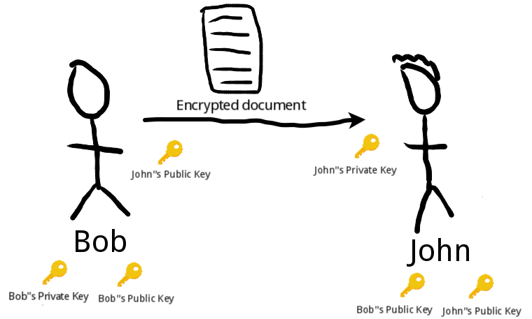

Há um tempo, os documentos de Edward Snowden revelaram a ocorrência da vigilância em massa de pessoas comuns, as quais eram feitas sem nenhum mandado judicial e estas pessoas não eram suspeitas de nenhum crime.
Os abusos são evidentes e o direito a privacidade é fundamental para garantir a liberdade e poder se expressar sem nenhum julgamento. O conceito de Panopticon contextualiza como a vigilância constante pode nos afetar, sendo capaz até de mudar nossos comportamentos. No TEDx, o Gleen Greenwald utiliza do conceito de panopticon para explicar o por quê a privacidade é importante.
Obviamente a privacidade nas telecomunicações está inclusa e por isso muitos usam PGP para se proteger.
Como PGP funciona

O PGP usa o conceito de criptografia assimétrica, o mesmo conceito usado no SSH e no qual existem duas chaves: a chave pública e a privada. A chave pública é usada somente para criptografar e a privada para descriptografar.
Na ilustração acima, Bob envia um documento para John e para ter certeza que somente John seja capaz de abrir ele usa a public key de John para criptografar. Quando John receber a mensagem, ele terá que usar a sua private key para descriptografar e conseguir ler o documento.
OpenPGP
É necessário ter o OpenPGP instalado, o qual por default já está instalado na maioria das distribuições Linux. O Seahorse (Passwords and Keys) é uma maneira fácil de administrar as chaves e o Thunderbird oferece uma integração também porém o terminal é muito mais divertido

Utilizo a versão 2.1.11 do gpg2, existem relatos de erros de importação quando se utiliza o gpg (versão 1.x) mas eis a diferença segundo a descrição do comando:
In contrast to the standalone command gpg from GnuPG 1.x, which is might be better suited for server and embedded platforms, the 2.x version is commonly installed under the name gpg2 and targeted to the desktop as it requires several other modules to be installed.
Criar a chave
No momento de criação é questionado sobre o tipo de chave ser RSA, DSA ou ElGamal. Os três tipos são algoritmos que realizam diferentes operações matemáticas para gerar a chave, criptografia não é a minha área mas algumas observações antes de decidir:
-
O default é RSA-RSA com 2048 bits
-
O DSA possui no máximo 1024 bits e é capaz apenas de assinar (garantir que a mensagem não foi alterada no caminho), não é capaz de criptografar/descriptografar. É considerada vulnerável
-
O RSA varia de 1024 até 4096 bits, é capaz de assinar e criptografar/descriptografar. É o recomendado pelo Debian desde que possua os 4096 bits e o seu criador recomenda ao menos 3k
-
O ElGamal e RSA se diferem pelo tempo levado para criptografar/descriptografar, para saber mais sobre as especificidades clique aqui
-
O tamanho da chave não implica em ser mais segura, por exemplo uma chave X de 1024 bits pode ser mais vulnerável que uma chave Y de 56 bits
Lembre-se de inserir uma senha segura, você pode checar em How Secure is My Password (não inserir senha real). E de acordo com Snowden:
Assume your adversary is capable of one trillion guesses per second
$ gpg2 --full-gen-key
gpg (GnuPG) 2.1.11; Copyright (C) 2016 Free Software Foundation, Inc.
This is free software: you are free to change and redistribute it.
There is NO WARRANTY, to the extent permitted by law.
Please select what kind of key you want:
(1) RSA and RSA (default)
(2) DSA and Elgamal
(3) DSA (sign only)
(4) RSA (sign only)
Your selection? 1
RSA keys may be between 1024 and 4096 bits long.
What keysize do you want? (2048)
Requested keysize is 2048 bits
Please specify how long the key should be valid.
0 = key does not expire
<n> = key expires in n days
<n>w = key expires in n weeks
<n>m = key expires in n months
<n>y = key expires in n years
Key is valid for? (0)
Key does not expire at all
Is this correct? (y/N) y
GnuPG needs to construct a user ID to identify your key.
Real name: Tars Test
Email address: tars@keemail.me
Comment:
You selected this USER-ID:
"Tars Test <tars@keemail.me>"
Change (N)ame, (C)omment, (E)mail or (O)kay/(Q)uit? O
Você deve obter no final algo como:
We need to generate a lot of random bytes. It is a good idea to perform
some other action (type on the keyboard, move the mouse, utilize the
disks) during the prime generation; this gives the random number
generator a better chance to gain enough entropy.
We need to generate a lot of random bytes. It is a good idea to perform
some other action (type on the keyboard, move the mouse, utilize the
disks) during the prime generation; this gives the random number
generator a better chance to gain enough entropy.
gpg: key 690B17FB marked as ultimately trusted
gpg: directory '/home/liveuser/.gnupg/openpgp-revocs.d' created
gpg: revocation certificate stored as '/home/liveuser/.gnupg/openpgp-revocs.d/E78CFDE04CE28CBC86DE3741B2AA9ABA690B17FB.rev'
public and secret key created and signed.
gpg: checking the trustdb
gpg: marginals needed: 3 completes needed: 1 trust model: PGP
gpg: depth: 0 valid: 1 signed: 0 trust: 0-, 0q, 0n, 0m, 0f, 1u
pub rsa2048/690B17FB 2016-05-27 [S]
Key fingerprint = E78C FDE0 4CE2 8CBC 86DE 3741 B2AA 9ABA 690B 17FB
uid [ultimate] Tars Test <tars@keemail.me>
sub rsa2048/C87D3B19 2016-05-27 []
Essa sequência de bytes denominada key fingerprint é fundamental, os últimos 8 dígitos dela formam a KEY ID.
Através da sua fingerprint que será estabelecida a confiança de que aquele e-mail de fato é seu. É comum as pessoas trocarem as fingerprinters pessoalmente, quando for verificado nos servidores o e-mail e a fingerprint corresponder aquela repassada pessoalmente então você pode confiar que aquele e-mail é realmente da pessoa.
Ao invés de trocar as fingerprinters, outros preferem repassar a chave pública pessoalmente por pendrive.
Fazer backup
É fundamental fazer backup para revogar a chave caso a perca ou comprometa e poder se comunicar.
Caso você perca a sua chave e não tenha feito backup, não há nada a se fazer ao menos esperar o tempo limite para ser revogada (caso tenha inserido tempo limite).
$ gpg2 --export-secret-keys --armor tars@keemail.me > tars-privkey.asc
$ gpg2 --export --armor tars@keemail.me > tars-pubkey.asc
Guarde os arquivos gerados num pendrive ou HD criptografado.
Tornar a public key disponível
Para que as pessoas sejam capazes de se comunicarem com você, é preciso sincronizar a sua chave pública gerada com os servidores.
A maioria dos servidores sincronizam com o keys.gnupg.net então mandar só para este é suficiente.
$ gpg2 -K --fingerprint #visualizar a sua fingerprint
pub rsa2048/690B17FB 2016-05-27 [SC]
Key fingerprint = E78C FDE0 4CE2 8CBC 86DE 3741 B2AA 9ABA 690B 17FB
uid [ultimate] Tars Test <tars@keemail.me>
sub rsa2048/C87D3B19 2016-05-27 [E]
$ gpg2 --send-keys 690B17FB #encaminhar para os servidores, a key id é passada
gpg: sending key 690B17FB to hkp://keys.gnupg.net
Agora você já está preparado..

Enviar uma mensagem
É necessário buscar a public key do nosso destinatário, lembre-se de verificar se a fingerprint confere caso já o conheça pessoalmente
$ gpg2 --search-keys danielamorais@tuta.io
gpg: data source: http://mira.cbaines.net:11371
(1) Daniela Morais (My personal key) <danielamorais@tuta.io>
2048 bit RSA key 8D4FA5B7, created: 2016-05-18
Enter number(s), N)ext, or Q)uit > 1
gpg: key 8D4FA5B7: public key "Daniela Morais (My personal key) <danielamorais@tuta.io>" imported
gpg: marginals needed: 3 completes needed: 1 trust model: PGP
gpg: depth: 0 valid: 1 signed: 0 trust: 0-, 0q, 0n, 0m, 0f, 1u
gpg: Total number processed: 1
gpg: imported: 1
$ gpg2 --fingerprint danielamorais@tuta.io
pub rsa2048/8D4FA5B7 2016-05-18 [SC]
Key fingerprint = E6F9 E569 0868 29A0 C92C BE6D 5807 ED06 8D4F A5B7
uid [ unknown] Daniela Morais (My personal key) <danielamorais@tuta.io>
sub rsa2048/91B55539 2016-05-18 [E]
Vou escrever um documento chamado teste e a descrição dos comandos são
--encrypt: cita que desejo criptografar algo
--sign: a mensagem será assinada, ou seja, qualquer alteração no conteúdo será detectada
--armor: converte a mensagem criptografada em ASCII, comando opcional
--recipient / -r: declara quem são os destinatários
$ vi teste
$ gpg2 --encrypt --sign --armor --recipient danielamorais@tuta.io teste #criptografar teste
gpg: 91B55539: There is no assurance this key belongs to the named user
sub rsa2048/91B55539 2016-05-18 Daniela Morais (My personal key) <danielamorais@tuta.io>
Primary key fingerprint: E6F9 E569 0868 29A0 C92C BE6D 5807 ED06 8D4F A5B7
Subkey fingerprint: F859 9BF8 D659 A0E6 EB68 12EA E5AB 81D0 91B5 5539
It is NOT certain that the key belongs to the person named
in the user ID. If you *really* know what you are doing,
you may answer the next question with yes.
Use this key anyway? (y/N) y
$ ls
teste teste.asc
O teste.asc pode ser encaminhado inteiro ou apenas o conteúdo, devido a opção --armor é possível encaminhar apenas o conteúdo.
Ler uma mensagem
Lembre-se que é possível fazer download do teste.asc ou criar um novo arquivo apenas com o conteúdo
$ gpg2 --decrypt teste.asc
gpg: encrypted with 2048-bit RSA key, ID 91B55539, created 2016-05-18
"Daniela Morais (My personal key) <danielamorais@tuta.io>"
teste
$ gpg2 --output messageFromTars --decrypt teste.asc #mensagem descriptografada esta no arquivo 'messageFromTars'
Assinar a chave
Assine a chave somente depois de checar a fingerprint, quanto mais assinaturas a pessoa possuir maior são as chances de fato aquele e-mail ser válido.
$ gpg2 --fingerprint danielamorais@tuta.io
$ gpg2 --sign-key 8D4FA5B7 #key ID
$ gpg2 -a --keyserver hkp://p80.pool.sks-keyservers.net:80 --send-keys 8D4FA5B7 #enviar key id
Verificar assinatura
A verificação das assinaturas garante que a mensagem não foi alterada. Além disso, caso você queira se comunicar com alguém que não use PGP pode apenas assinar a mensagem.
$ gpg2 --output exemplo.asc --clearsign exemplo.txt #assinando exemplo.asc
$ gpg2 --verify exemplo.asc #verificando assinatura
gpg: Signature made Sun 29 May 2016 03:53:46 AM BRT using RSA key ID 8D4FA5B7
gpg: Good signature from "Daniela Morais (My personal key) <danielamorais@tuta.io>" [ultimate]
Caso a mensagem tenha sido alterada
$ gpg2 --verify exemplo.asc
gpg: Signature made Sun 29 May 2016 03:53:46 AM BRT using RSA key ID 8D4FA5B7
gpg: BAD signature from "Daniela Morais (My personal key) <danielamorais@tuta.io>" [ultimate]
Se o remetente usou a opção --sign, no momento da descriptografia é mostrado a assinatura.
And other cool things..
$ gpg2 --list-public-keys #listar as chaves publicas importadas
/home/liveuser/.gnupg/pubring.kbx
---------------------------------
pub rsa2048/690B17FB 2016-05-27 [SC]
uid [ultimate] Tars Test <tars@keemail.me>
sub rsa2048/C87D3B19 2016-05-27 [E]
pub rsa2048/8D4FA5B7 2016-05-18 [SC]
uid [ unknown] Daniela Morais (My personal key) <danielamorais@tuta.io>
sub rsa2048/91B55539 2016-05-18 [E]
$ gpg2 --list-secret-keys #listar as chaves privadas
/home/liveuser/.gnupg/pubring.kbx
---------------------------------
sec rsa2048/690B17FB 2016-05-27 [SC]
uid [ultimate] Tars Test <tars@keemail.me>
ssb rsa2048/C87D3B19 2016-05-27 [E]
$ gpg2 --search-keys 'Daniela Morais' #buscar por nome
gpg: data source: http://mira.cbaines.net:11371
(1) Daniela Morais (My personal key) <danielamorais@tuta.io>
2048 bit RSA key 8D4FA5B7, created: 2016-05-18
(2) Daniela Morais (My personal key) <danielamorais@protonmail.com>
2048 bit RSA key 27D40114, created: 2016-05-08 (revoked)
Referências
PGP FAQ Security
http://www.pgp.net/pgpnet/pgp-faq/pgp-faq-security-questions.html#security-against-nsa
RSA Key Sizes: 2048 or 2096 bits
http://danielpocock.com/rsa-key-sizes-2048-or-4096-bits
Creating GPG Keys
What is the difference between DSA and RSA
http://stackoverflow.com/questions/2841094/what-is-the-difference-between-dsa-and-rsa